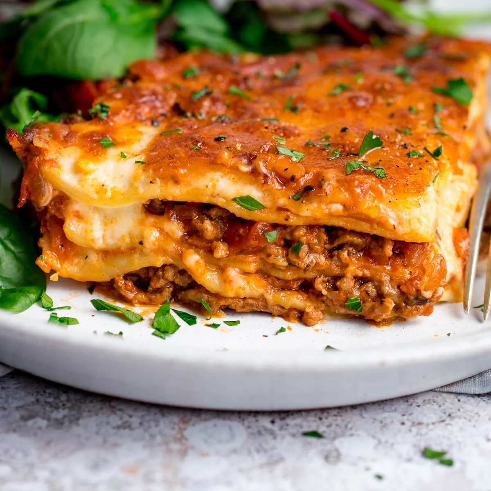

Lasagna

Lasagna
Lasagna is a type of pasta, possibly one of the oldest types, made of very wide, flat sheets.
Either term can also refer to an Italian dish made of stacked layers of lasagna alternating with fillings such as
ragù (ground meats and tomato sauce), vegetables, cheeses (which may include ricotta, mozzarella, and parmesan),
and seasonings and spices, like Italian seasoning, such as garlic, oregano and basil.The dish may be
topped with grated cheese, which becomes melted after baking. Typically cooked pasta is assembled with the other
ingredients and then baked in an oven. The resulting baked pasta is cut into single-serving square portions.
Ingredients
- 1 to 1-1/2lb ground meat, depending on preference (Italian sausage, beef, veal, lamb, or a mixture)
- 1lb (0.45 kilograms) ricotta cheese
- 1lb (0.45 kilograms) shredded Mozzarella cheese
- 1 egg
- 1 white onion, diced
- 2 cloves garlic, crushed
- 1 14 ounce can crushed tomatoes
- 28 ounces tomato sauce
- 6 ounces tomato paste (optional)
- 1 box Lasagna noodles (9-12 noodles)
- Grated Parmesan or Romano cheese, to taste
- 1-2 tablespoons olive oil
- 2 cups of cheddar cheese (for topping)
Steps
-
Cook the noodles in boiling water.
Make sure you keep the entire lasagna noodle from breaking, as you will need unbroken sheets when you
layer the dish later. Add a pinch of salt to the pot right before you add the noodles and let them cook
according to the time on the box, usually 10-12 minutes. Stir occasionally, every 1-2 minutes.
When they are done, drain the water and set aside the noodles to cool.
-
Heat a tablespoon of oil in a large pan on medium heat.
Do not move on until the oil is shimmering. This means it is hot,
and adding ingredients too soon can lead to soggy, oily food.
-
Add a diced medium white onion and 2 cloves of chopped garlic and cook for 2-3 minutes until they start
becoming translucent. Translucent simply means that the edges of the onions have begun to turn clear.
You do not need the onions to be fully cooked just yet.
-
Add the 1lb of ground meat to the pan and cook until browned. Mix the meat in with the onions and garlic,
stirring well, and cook on medium heat until completely browned. Add salt and crushed black pepper, to taste,
as it cooks. If you have time, cook the meat in a separate pan, though this is not necessary.
-
Transfer the meat and vegetables to a large sauce pot on medium-low heat. The pot needs to be big enough to
hold your sauce and tomatoes as well.
-
Add the sauce and tomatoes to the saucepot and bring to a simmer. Pour your 28 ounces of sauce, 12 ounces of
crushed tomatoes and 6 oz of tomato paste to the meat and vegetable mixture and stir well. Raise the heat
to medium until the sauce comes to a low simmer, when occasional bubbles break the surface of the sauce.
-
Cook the sauce on a low simmer for 10-15 minutes. The longer the sauce has to cook, the richer it will be.
Stir it regularly, being sure to get down to the bottom so that nothing burns. When you're ready to build
the lasagna, remove the sauce from heat and let it cool gently.
-
Whip your ricotta together with the beaten egg. Whip up one egg with a fork, as if preparing scrambled eggs,
and then mix it in with the ricotta. The egg will help the cheese bind with the layers of pasta, keeping
your whole dish together when it is done cooking.
-
Spoon a thin layer of sauce into the bottom of a large, oven-safe dish. You want something with tall sides, such
as a 13x9x2" or 2-quart baking dish. Spread the sauce evenly, enough to cover the entire bottom of the dish.
-
Lay lasagna noodles over the entire bottom of the dish. You should be able to get three noodles
vertically layered over the bottom, slightly overlapping. While a little overlap (1" or less) is fine, feel
free to trim the noodles with a clean pair of kitchen shears if need be. You want the entire bottom surface
covered with noodle.
-
Spoon 1/3 of the ricotta mixture evenly over the noodles. Spread a nice layer of the ricotta over the tops of the
noodles so that every bite will be nice and cheesy. Be sure to save the other 2/3 -- you'll need it for the rest
of the layers.
-
Spoon 1/3 of the sauce over the ricotta. Get your filling into the pan, spooning it generously over the lasagna.
-
Top the sauce with a generous coating of mozzarella. This final layer of cheese will complete your first layer of
lasagna. Coat the top enough that the sauce is only poking out in a few places underneath, or use less for a
slightly healthier option.
-
Continue layering in this pattern --noodles, ricotta, sauce, mozzarella-- until you run out of noodles. The top and
final layer should be mozzarella. Just keep layering your lasagna like this to end up with your final, glorious
lasagna.
-
Bake for 30-40 minutes at 375℉, covered with aluminum foil. Put a layer of aluminum over the lasagna before it goes
into the oven. To prevent the sauce from spilling over the edge as it heats up, you can also place the entire dish
on a baking tray to keep the sauce from getting on your oven. Since the dish is technically
already cooked, putting it in the oven is meant to melt the cheese and let the flavors meld deliciously.
That said, you can take it out when you feel like it is hot and ready to serve.
-
Let the lasagna sit for 10 minutes before serving. This lets the cheese re-solidify, just a bit, which will keep
the layers from sliding off of one another when you serve the lasagna.